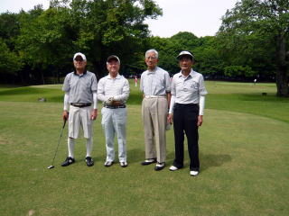

| 横浜国立大学工学部第四寮 |
| 第15回弘南寮ゴルフ大会 |
時：平成2７年０５月２２日（金）
所：千葉県 総武カントリー印旛コース
| 今回の参加者は総員８名、稲田浩一さんのホームコースである総武カントリー印旛コースに集い、日頃鍛えた腕前を競った。 当日は微風快晴、これぞまさにゴルフ日和とも云うべき、ベストサンプルの一日でした。 幹事は稲田浩一さんのボランティア奉仕でした。 多謝多謝。 |
 |
スタート前の勢揃い
前列左から：
37年建築 野村安広
40年機械 安岡 慶和
34年機械 山之内克彦
後列左から
37年造船 猪原 暉雄
38年造船 久米 範佳
37年応化 高橋 千穐
36年電工 高石 周志
38年電工 稲田 浩一
さぁ 難行苦行の始まり
| 第１組 | 第２組 |
|  | |
| 左より 野村 （ ６） 猪原 （２３） 山之内 （２０） 高橋 （２９） （カッコ内はハンディ） |
安岡 （２７） 高石 （１７） 久米 （２１） 稲田 （１０） |
昼食による重心移動は吉と出るか凶とでるか
反省会 ＆ 成績発表
スコア ＨＤＣＰ ＮＥＴ 次回ハンディ
優勝 久米範佳 ４８－５０＝ ９８ ２１ ７７ １７
２位 猪原暉雄 ５１ー５１＝１０２ ２３ ７９ ２１
３位 野村安広 ４４ー４３＝ ８７ ６ ８１ ６
（ベスト グロス）
尚、毎回取る人が決まっている ドラコン、ニアピン、ベスグロの賞は、
手を叩くだけのクラスから評判が悪く、見送りとされた。
| 次回大会は10月2日（金）、山之内さん、久米さんの幹事のもと、川崎国際生田緑地ゴルフ場にて、行われる予定です。 |
懇親会と反省会
| 久米さんの優勝者の弁 | 野村さんのベスグロの貫録 |
|